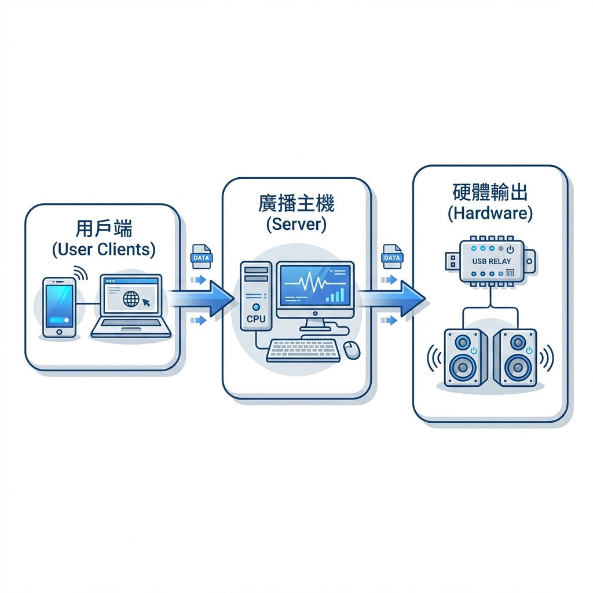
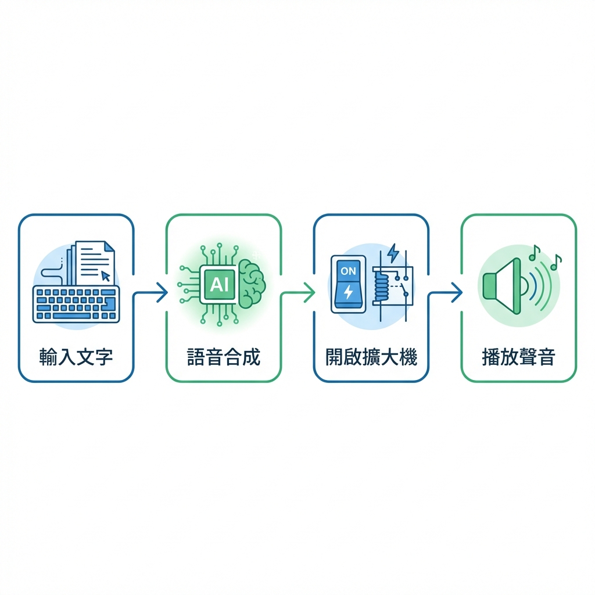
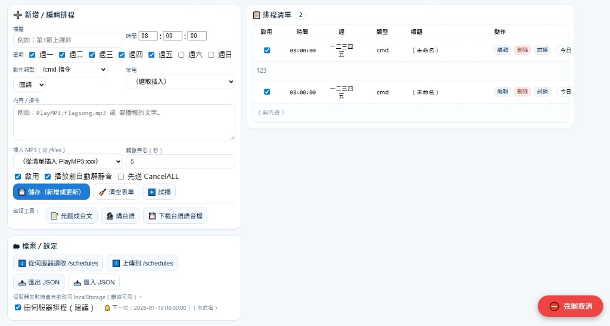

📚 主控端使用說明
完整的操作指南，讓您快速上手校園廣播系統
📑 快速導覽
🚀 快速開始
1️⃣ 啟動系統
-
執行程式
雙擊
udp_receiver_0110.exe或執行：python udp_receiver_0110.py -
開啟 Web 介面
方法 1：點擊桌面 UI 的「🌐 開啟前端(QR....)」按鈕
方法 2：手動在瀏覽器訪問本機 IP：
http://本機IP:5050（例如：http://192.168.1.100:5050） -
登入系統
使用您的帳號密碼登入（預設管理員帳號請洽系統管理員）
2️⃣ 介面概覽
🖥️ 桌面 UI (Tkinter)
- 主控台 - 即時日誌與快速操作
- 課表 - 課表編輯與管理
- 檔案 - MP3 上傳與管理
- 排程 - 自訂排程設定
- 設定 - 系統參數調整
🌐 Web 介面
- 響應式設計，支援手機/平板
- 多頁面導覽系統
- 即時狀態更新
- PWA 支援，可安裝到桌面

▲ RelayBell Web 操作介面 (實際畫面)
🔊 文字廣播
基本操作教學
-
步驟 1：輸入廣播內容
請找到左上角的 「📝 傳送文字訊息」 區塊。在白色的文字輸入框中，打字輸入您想要廣播的內容。
範例：「各位老師同學大家早安，現在是晨間廣播時間。」
-
步驟 2：選擇語音與速度 (非必要)
若您想改變聲音，請看右側的 「🗣️ 語音設定」 面板：
- 語言：點選選單選擇中文、英文或日文等。
- 聲別：選擇您喜歡的「男聲」或「女聲」。
- 語速：拖動滑桿，向右 (快) 或向左 (慢) 調整說話速度。
-
步驟 3：發送廣播
確認內容無誤後，點擊藍色的 按鈕。
系統會立即將文字轉為語音並透過擴大機播放出來。
進階功能教學
🤖 如何使用 AI 自動寫稿？
不知道廣播稿怎麼寫？讓 AI 幫您！
-
在文字框中輸入簡單的關鍵字。
例如：輸入「放學提醒、帶雨傘、注意安全」 - 點擊紫色的 按鈕。
- 稍等約 2-3 秒，AI 會自動生成一篇通順、有禮貌的廣播稿，並自動填入文字框開始朗讀。
🌤️ 如何播報即時氣象？
想讓全校知道今天的天氣？
- 直接點擊白色的 按鈕。
- 系統會自動抓取學校目前的氣溫、天氣狀況及空氣品質。
- 氣象資訊會自動貼上到文字框中，您只需按下「直接廣播」即可。
🌍 多語言翻譯助手
需要雙語廣播？不用自己查字典！
- 在「翻譯助手」區塊，選擇目標語言（如英文、日文、越語）。
- 點擊 確定翻譯。
- 系統會自動將上方文字框的內容翻譯成目標語言，並覆蓋上去。
- 按下「直接廣播」，系統就會用該國語言朗讀出來囉！(TTS)
🎵 多媒體播放
🎵 MP3 音樂檔案播放教學
情境 A：播放電腦裡的 MP3
-
步驟 1：選擇檔案
找到「🎵 MP3 / YouTube」區塊，點擊灰色的 按鈕。
在彈出的視窗中，選擇您電腦中的
.mp3音樂檔。 -
步驟 2：上傳至系統
選好後，點擊藍色的 按鈕。
系統會提示「上傳成功」，並自動幫您選取剛上傳的檔案。
-
步驟 3：開始播放
確認下拉選單已選取該檔案，動作為「播放」，然後點擊 按鈕。
情境 B：播放已上傳過的檔案
-
點擊下拉選單（顯示
uploads/...），從清單中選擇檔案。 - 點擊 即可播放。
📹 如何播放 YouTube 影片/音樂？
模式 1：純聽音樂 (推薦)
想播 YouTube 上的音樂，但不需要畫面？用這個模式最穩！
- 複製 YouTube 影片的網址 (URL)。
- 貼上到「貼上 MP3 或 YouTube 連結...」的輸入框中。
- 點擊深藍色的 按鈕。
-
請稍候！ 系統會自動下載音軌（主控台會顯示進度），下載完成後會自動開始播放。
(下載過的檔案會自動存檔，下次播就不用等了！)
模式 2：全螢幕播放影片
適合在教室或禮堂投影大螢幕使用。
- 同樣貼上 YouTube 網址。
- 點擊黑色的 按鈕。
- 電腦螢幕會跳出全螢幕播放視窗。若要結束，請按 。
常用控制按鈕說明
⏸ 暫停 / ▶️ 繼續
暫時離開一下？按暫停保留進度，回來再按繼續。
⏹ 停止
完全卡歌，下次會從頭開始播。
🟥 強制取消 (緊急按鈕)
遇到任何狀況（播錯歌、聲音關不掉、當機），請直接按右下角的紅色 強制取消！
它會強制殺死所有播放程序，讓系統瞬間安靜。
🎤 即時錄音廣播
✨ 什麼是遠端麥克風？
簡單說，就是把您的手機或筆電當成校長的麥克風！
只要您的裝置有麥克風，連上這個網頁，就能隨時隨地對全校廣播，不用跑到主控室。
瀏覽器會詢問「是否允許使用麥克風？」，請務必點選 [允許]。
如果按到拒絕，請點擊網址列左側的鎖頭圖示 🔒 來重新開啟權限。
方法 1：按住說話 (對講機模式)
最快、最直覺的方式，就像在使用對講機。
-
步驟 1：按住不放
滑鼠按住（或手指壓住）藍色的 按鈕。
-
步驟 2：開始說話
當按鈕變紅並顯示「🎙️ 放開即播」時，對著麥克風講話。
-
步驟 3：放開手指
講完後，放開按鈕。系統會「立刻」將剛剛那段話廣播出去。
方法 2：錄音後預覽 (謹慎模式)
怕講錯話？先錄起來聽聽看，滿意再送出。
-
步驟 1：開始錄音
點擊紅色的 按鈕。
-
步驟 2：錄製內容
開始說話...（此時按鈕會變成「⏹ 停止錄音」）。講完後再次點擊該按鈕停止。
-
步驟 3：試聽檢查
畫面會出現一個播放器，點擊 ▶️ 播放鍵聽聽看剛剛錄的聲音。
-
步驟 4：決定去留
如果不滿意，點 重錄。
如果滿意，點 ，聲音才會真正廣播出去。
🕐 排程管理教學
什麼是排程？
排程就是讓系統當您的「自動報時員」。您可以設定系統在每天、每週甚至是特定日期的某個時間點，自動播放音樂或講話。
範例：每天 12:00 播放午餐輕音樂、每週五 16:00 提醒大掃除。
實戰演練：設定一個「午休結束鈴」
我們來練習設定一個：每週一到週五，下午 13:00，播放《上課鐘聲.mp3》。
-
步驟 1：新增排程
進入
🕐 排程頁面，點擊右上角的 按鈕。 -
步驟 2：填寫基本資料
- 標題：輸入「午休結束」。
- 時間：輸入
13:00。 - 天數：勾選
Mon (一),Tue (二),Wed (三),Thu (四),Fri (五)。
-
步驟 3：設定動作
- 類型：選擇
sendmp3(播放檔案)。 - 內容：輸入檔名
bell_ring.mp3(需確認檔案已上傳)。
- 類型：選擇
-
步驟 4：儲存生效
點擊 。列表中看到它顯示「啟用中」就成功了！
排程類型總整理
除了播放 MP3，排程還能做很多事：
📝 TTS 語音廣播
類型代碼：tts
說明：時間到自動講話。
內容範例：「現在是打掃時間，請同學開始打掃環境。」
🎵 MP3 音樂
類型代碼：sendmp3
說明：播放已上傳的音樂檔。
內容範例：song.mp3
📹 YouTube 影片
類型代碼：youtube
說明：自動播放 YouTube。
內容範例：(貼上影片網址)
🌤️ 氣象播報
類型代碼：cmd
說明：執行系統指令。
內容範例：WeatherReport
排程 (Schedule)：適合特殊的、單次的、或非上課鐘聲類的任務（如打掃、升旗）。
課表 (Timetable)：專門管理每天固定的上下課鐘聲（早自習、第一節、下課...），結構較固定。
📚 課表設定教學
Q: 課表跟排程有什麼不同？
- 課表 = 學校每天固定的上下課鐘聲（7:30早自習、8:10第一節...）。
- 排程 = 偶爾才做一次的廣播（週會、大掃除、英聽測驗）。
實戰演練：設定週一的課表
假設我們要設定週一早上的作息：08:00 升旗典禮、08:10 第一節上課。
-
步驟 1：進入課表頁面
點擊導覽列的
📚 課表或訪問tt.html。 -
步驟 2：選擇星期
在頁面最上方，點選 Monday (週一)。
-
步驟 3：新增第一節作息
點擊列表右上的 ，依序填入：
- 時間：
08:00 - 動作：
play_mp3(播放音樂) - 參數：
flag_raising.mp3(升旗歌) - 說明：升旗典禮
填完後按下「✅ 確定」或是儲存。
- 時間：
-
步驟 4：新增第二節作息
再次點擊新增，填入：
- 時間：
08:10 - 動作：
bell(系統鐘聲) - 參數：
ClassStart(上課鐘) - 說明：第一節上課
- 時間：
-
步驟 5：完成儲存
確認列表無誤後，務必點擊頁面下方的 按鈕。
進階：課表動作代碼表
🔔 系統鐘聲
動作：bell
參數：
ClassStart(上課)ClassDismiss(下課)
🎵 播放音樂
動作：play_mp3
參數：輸入完整的檔名
例如：clean_up_song.mp3
📝 TTS 廣播
動作：tts
參數：輸入要講的中文
例如：午餐時間到了
📹 YouTube
動作：youtube
參數：貼上影片網址
📅 單次預約 (Single Day)
Q: 這跟排程又有什麼不同？
- 排程 (Schedule) = 週期性的（每個禮拜一...）。
- 預約 (Reservation) = 「只做這一次」的（例如：下週三的疫苗接種廣播）。
- 執行完畢後，預約項目不會自動刪除，但會過期失效。
功能特色
不用等到當天，您可以提前幾週先將要廣播的事項設定好。時間一到，系統自動執行！
不用等到當天，您可以提前幾週先將要廣播的事項設定好。時間一到，系統自動執行！
支援：文字廣播 (TTS)、播放 MP3、甚至執行系統指令。
支援：文字廣播 (TTS)、播放 MP3、甚至執行系統指令。
實戰演練：預約下週三的「疫苗接種提醒」
-
步驟 1：進入頁面
點擊導覽列的
📅 預約或訪問single_reservation.html。 -
步驟 2：設定時間
在左側的「新增單次預約」表單中：
- 日期：選擇
下週三的日期。 - 時間：選擇
08:15。 - 標題：輸入
疫苗接種提醒(給自己看的備註)。
- 日期：選擇
-
步驟 3：設定內容
- 動作類型：選擇
/send 文字播報。 - 內容：輸入「請三年級同學，現在集合準備施打疫苗。」
💡 如果需要播放音樂，動作選
/sendmp3，然後在下方「快速插入 MP3」選單中選擇檔案即可。 - 動作類型：選擇
-
步驟 4：加入清單
按下 按鈕。
您會在右側的「📋 預約清單」中看到剛剛新增的項目。
進階功能：台語廣播小幫手
這頁面還內建了超強的台語翻譯功能喔！
- 輸入中文：在內容框輸入中文。
- 翻譯：點擊 ，系統會自動翻成台語漢字。
- 試聽：點擊 ，確認發音是否正確。
- 預約：確認無誤後，直接加入預約即可！
🎙️ 行動廣播站 (Mobile App)
這是專為手機設計的介面，讓老師或教官可以在操場、走廊等任何地方，直接用手機對全校廣播。
兩大廣播模式
1. 錄音傳送 (標準模式)
特色：講完才送出，不會吃螺絲。
適合：重要宣布、朗讀文章。
操作方法：
- 按住 ‧ 即說：像對講機一樣，按著講，放開就送出。
- 點擊開始錄音：點一下開始錄，錄完再點一下停止，可以先「試聽」滿意再送出。
2. 🔴 即時直播 (Live Mode)
特色：低延遲，講什麼播什麼。
適合：緊急狀況、升旗典禮指揮。
操作方法：
- 切換上方開關到 🔴 即時直播。
- 按下紅色按鈕，即刻開始連線廣播。
其他好用功能
- 🔊 現場音量：覺得廣播聲音太小？直接在手機上拉動拉桿調整。
- 🔌 Relay 控制：可以直接用手機遠端開啟/關閉擴大機電源。
- 📲 安裝成 App：在手機瀏覽器選單點選「加入主畫面」，就能像 App 一樣全螢幕使用。
實戰演練：操場升旗指揮
-
步驟 1：開啟擴大機
拿出手機打開網頁，滑到下方點擊 ，確認廣播系統電源已開。
-
步驟 2：切換直播模式
因為要喊口令，需要即時性。將上方模式切換為 🔴 即時直播。
-
步驟 3：開始廣播
按下中間大大的 🔴 點擊開始直播 按鈕。
「全體注意！現在開始升旗典禮...」
-
步驟 4：結束
典禮結束後，再按一次停止直播，並點擊 關閉擴大機。
🔇 無聲廣播 (數位看板)
要使用無聲廣播與遠端控制功能，被控制的電腦（學生端）必須先安裝 Student Agent 軟體。
- 在學生電腦上，打開瀏覽器訪問本系統的
announce.html(原本的公告頁面)。 - 首次訪問時，畫面會跳出提示視窗。
- 點選 「同意並下載」，下載
student_agent.exe安裝檔。 - 執行安裝檔，安裝完成後程式會自動在背景執行等待廣播。
功能介紹
- 📝 文字公告：輸入文字，學生端螢幕會跳出公告視窗。
- 🖼️ 圖片/影片推播：可以上傳海報、照片或宣導短片，直接在學生端全螢幕播放。
- 🔇 靜音 vs 🔊 朗讀：您可以選擇「靜音送出」或是「朗讀送出」(TTS唸給你聽)。
學生端控制 (進階)
除了廣播，這個頁面也是電腦教室管理的好幫手：
💻 狀態監控
可以看到目前有哪些電腦上線 (Green)、IP、以及最後連線時間。
🛠️ 遠端指令
- ：讓學生暫時無法操作。
- ：放學時一鍵關閉所有電腦。
- ：統一幫學生打開指定網頁。
實戰演練：發布「午餐菜單」圖卡
-
步驟 1：準備圖檔
準備好今天的午餐菜單圖片 (JPG/PNG)。
-
步驟 2：上傳圖片
在面板上點選 ，選取菜單圖片，然後點 。
成功後應該會看到圖片預覽。
-
步驟 3：送出公告
點擊 。
此時全校電腦螢幕上都會自動跳出這張午餐菜單，而且完全不會有聲音打擾午休！
🔴 即時直播 (Live Broadcast)
觀眾端（學生電腦）必須安裝並執行 Student Agent 才能自動彈出直播視窗。
這是一個專為校園設計的低延遲直播系統，老師可以直接使用電腦或手機的鏡頭，對全校或特定班級進行畫面廣播。
功能特色
- 👥 指定觀眾：左側選單可以勾選特定班級或「全選」。
- 🔔 上下課鐘聲：內建「片頭/片尾」音效按鈕，廣播前後可以按一下提示學生。
- 📷 雙鏡頭切換：支援切換前後鏡頭 (手機) 或不同 WebCam (電腦)。
實戰演練：校長朝會直播
-
步驟 1：進入直播間
點擊首頁的 按鈕。
-
步驟 2：選擇觀眾
點擊左上角的 👥 選擇觀眾，勾選全校班級，或直接按「全選」。
-
步驟 3：開始直播
確認預覽畫面正常後，按下中間大大的 🔴 開始直播。
此時全校電腦會自動彈出全螢幕直播畫面。
📹 雙向視訊通話 (Two-way Call)
被呼叫的學生端電腦必須安裝並執行 Student Agent。
這不只是廣播，更是雙向溝通工具。老師可以單獨「呼叫」某一台學生電腦，進行一對一視訊對話。
功能介紹
💬 文字聊天 + 朗讀
通話中可以傳送文字訊息，並勾選「傳送並朗讀」，系統會直接在學生端把文字唸出來 (TTS)。
🎤 音頻視覺化
介面下方有波形圖，可以直觀看到對方的聲音訊號強度。
操作流程
- 點擊首頁的 📹 通話 進入教師端介面。
- 左側列表會顯示目前上線的學生電腦 (綠燈表示在線)。
- 點擊目標學生，系統會自動對該電腦發送連線請求。
- 連線建立後，即可開始雙向視訊與對話。
⚡ 自訂快速鍵 (Shortcuts)
如果您有一些每天都要播的音樂（如：打掃歌、升旗歌）或是常講的廣播詞（如：放學叮嚀），不用每次都重選檔案或重打字。
將它們設定成「快速鍵」，下次只要一鍵就能發送！
如何新增快速鍵？
範例：設定「打掃時間」音樂快速鍵
-
步驟 1：進入頁面
點擊導覽列的
⚡ 快捷或訪問shortcuts.html。 -
步驟 2：輸入名稱
在「新增快速鍵」區塊，名稱欄位輸入：
打掃時間音樂。 -
步驟 3：選擇類型與檔案
類型勾選 播放 MP3。
在檔案選單中選擇
clean_up.mp3(若檔案不在清單中，請先點「⬆ 上傳」)。 -
步驟 4：勾選選項 (推薦)
勾選 播放前提示音，讓學生聽到「噹噹噹」注意聽廣播。
-
步驟 5：完成
按下 ＋ 新增快速鍵。右側列表就會出現這個新按鈕了！
範例：設定「反詐騙宣導」語音快速鍵
- 名稱輸入：
反詐騙提醒。 - 類型勾選 播報文字。
- 內容輸入：
「各位同學請注意，請勿輕信網路上來源不明的連結...」。 - 按下新增，搞定！
如何使用？
設定好之後，您隨時回到這個頁面，在右側的列表中找到該項目，點擊綠色的 按鈕即可。
⚡ 頁面專屬功能
🔄 音量控制
頁面上方有獨立的音量拉桿，方便您隨時調整背景音樂的大小。
⏹ 緊急停止
上方紅色的 按鈕，可以隨時中斷目前的廣播。
🎵 教師端控制台 (媒體與管理)
「教師端控制台」是專為教室與分組廣播設計的綜合面板，整合了媒體播放、學生狀態監控與分組控制功能。
請點擊導覽列的 🎵 媒體 或訪問 teacher.html 進入。
1. 學生狀態與全域控制
頁面最上方顯示了學生端的連線狀態與快速操作按鈕：
- 上線統計： 即時顯示目前上線的設備數量。
- 分組快開 (G1-G6)： 一鍵開啟特定分組的視窗，將畫面導向到指定網址。
- 電源控制：
- ：對所有連線中的學生端發送關機指令。
- ：對所有連線中的學生端發送重開機指令。
- ：透過網路喚醒功能 (Wake-on-LAN) 嘗試開啟選取的電腦。
2. 分組媒體播放 (Media Playback)
畫面主要區域分為 6 個分組卡片 (Group Cards)，每個卡片對應一個學生群組。這裡的控制功能非常細緻，適合語言教學或影片欣賞。
📂 選擇與上傳
您可以從伺服器清單選擇，或直接上傳新檔案。
- 清單選擇： 下拉選單包含所有已上傳的 MP3/MP4。
- 即時上傳： 點擊「選擇檔案」後按「上傳」，檔案會自動進入清單並選取。
🎛️ 進階播放控制 (全同步)
所有的播放操作都會即時同步到學生端：
- ▶ 播放/暫停： 教師端按下，學生端同步動作。
- ⏩ 調整進度 (Seek)： 拉動教師端的進度條，學生端會跳轉到相同時間點。
- 🔊 音量控制： 拉動音量桿，直接改變該組學生電腦的音量。
- 🐢 變速播放 (0.5x - 2x)： 支援調整播放速度！適合英語聽力練習，放慢速度讓學生聽得更清楚。
3. 分組預約播放 (Advanced Scheduling)
每個分組卡片下方都有獨立的「預約區塊」，這比主控台的排程更靈活，可以針對單一組別設定。
設定預約時，您可以選擇「起點模式 (Seek Mode)」：
- 從頭 (Zero)： 時間到時，從檔案最開始播放。
- 依本卡預覽時間 (Preview)： 超強功能！您可以先在教師端將影片拉到特定段落 (例如 10:30)，然後選擇此選項。系統會在預約時間到時，讓學生端直接從 10:30 開始播放！
4. 其他管理功能
- 即時訊息插播： 輸入文字與秒數，發送跑馬燈到該組螢幕上方 (不影響正在播放的媒體)。
- 鎖定/解鎖控制： 防止學生操作電腦 (需搭配對應 Client 程式)。
- 關閉視窗： 若學生端視窗無法關閉，可點擊「關閉本組視窗」強制把學生端的媒體視窗關掉。
👥 客戶端裝置管理
此頁面用於管理學生端設備的識別身分 (ID) 與檢視詳細連線資訊。請點擊導覽列的 👥 設備 進入。
功能說明
-
檢視連線列表
列表顯示了所有曾經連線過的設備，包含 ID、IP 位址、MAC 位址與目前狀態 (Online/Offline)。
-
修改設備 ID (重新命名)
若要更改學生端的顯示名稱 (例如將
Student-01改為一年甲班-01)：- 點擊該設備卡片右側的 按鈕。
- 輸入新的 ID 名稱並確認。
- 系統會發送指令給學生端，學生端會自動更新設定檔並重新連線。
修改 ID 會導致學生端重新啟動 Agent 程式。請避免在廣播進行中執行此操作。
🗒 事件紀錄 (System Logs)
系統會自動記錄所有的廣播操作、連線狀態與錯誤訊息，方便管理員進行稽核與除錯。
請點擊導覽列的 🗒 紀錄 進入查詢頁面。
1. 查詢功能
您可以透過上方工具列進行篩選：
- 日期選擇： 系統每日會產生一個新的紀錄檔 (Log File)，請先選擇要查詢的日期。
- 關鍵字搜尋： 輸入 IP 位址 (如
192.168) 或動作關鍵字 (如PlayMP3、Shutdown) 來快速找到特定紀錄。
2. 紀錄欄位說明
| 欄位 | 說明 |
|---|---|
| 時間 | 事件發生的精確時間點。 |
| 來源 (Sender) | 觸發該事件的角色 (例如：WebConsole 代表主控台、StudentAgent
代表學生端的回報)。
|
| IP/MAC | 發送者的網路位址，可用於追蹤是哪一台電腦執行的操作。 |
| 動作/內容 | 具體執行的指令或訊息內容 (例如：播放: school_bell.mp3)。 |
3. 匯出紀錄
若需要保存紀錄或進行統計分析，點擊右上角的 按鈕，即可將當日的紀錄依 Excel 格式匯出。
🚨 地震預警 (CWA)
本功能依賴交通部中央氣象署 (CWA) 的公開資料。為了能正常收到警報，請務必：
- 保持主機網路連線暢通。
- 申請並填入正確的 CWA API 授權碼。
1. 基本設定
進入 🌋 地震 頁面後，請檢查左側的設定面板：
- 啟用輪詢： 務必打勾，系統才會每分鐘向氣象署查詢最新地震資訊。
- 輪詢間隔： 建議設定為
60秒。 - 警報門檻 (震度)： 設定警報觸發門檻 (例如：
3級)。只有當預估震度達到此等級時，才會發送廣播。 - 所在縣市： 輸入您的所在地
(例如：
臺北市、高雄市)。系統會自動過濾，只有當您所在的縣市震度達標時才警報。
2. 警報運作流程
-
偵測與比對
系統偵測到 CWA 發布顯著有感地震。
-
條件判斷
系統計算您所在縣市的預估震度。若大於設定門檻 (例如 3級)，則觸發警報。
-
自動廣播
主控台會自動對全校廣播警報音效 (依設定的 MP3) 與語音播報 (震央、規模、預估震度)。
3. 測試與緊急操作
🧪 演練測試
為了防災演練，您可以隨時點擊 🧪 送出測試警報 按鈕。
系統會模擬一個規模 6.5 的地震警報，讓師生熟悉警報聲響。
⛔ 強制取消
若發生誤報或演練結束，請點擊紅色的 ⛔ 強制取消 按鈕。
系統會立即停止所有廣播並發送「警報解除」訊號。
4. 天氣警特報
頁面右側會即時顯示所在縣市的天氣警特報 (例如：豪雨特報、低溫特報)，供行政人員參考。
⚙️ 系統設定
Ollama AI 設定
若要使用 AI 生成廣播稿，請確認：
- 本機已安裝 Ollama 服務
- 已下載
gemma2:2b或其他相容模型 - 確認 Ollama 服務正在執行 (預設 port 11434)
擴大機控制 (USB Relay)
支援 USB 繼電器控制擴大機電源。
- **COM Port**：選擇繼電器連接的序列埠 (COM1, COM3...)
- **測試**：點擊 [ON] / [OFF] 測試開關
- **自動啟動**：勾選「自動啟動擴大機」，則每次播放聲音時會自動過電，播放完畢後自動斷電。
❓ 常見問題
Q: 網頁無法連線？
A: 請確認防火牆已允許 Python 程式通過，並確認手機與電腦連接同一個 Wi-Fi 網路。
Q: 聲音出不來？
A: 檢查電腦靜音設定、喇叭連接、以及網頁上的 [靜音] 按鈕狀態。
Q: 麥克風無法使用？
A: 這是瀏覽器安全性限制。請參考「即時錄音廣播」章節的權限設定教學。